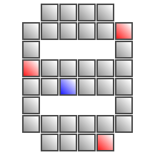
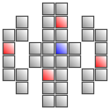
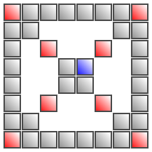

Chapter X スティグマStigma
- 注意
-
難易度エクストリームはクリア後に出現するオマケステージですが、ハードモードをクリアした人向けの難易度です。
エクストリームをクリアするには絶対的なリモコン操作技術が必要になるので、イージーもしくはノーマルをクリアしたての方には絶望的なほど難しいです。
また、クリアしたからといって特典が出るとか、そういったことは一切ありません。自己満足の世界です。
- 1ケイル/Cheir
-
Information
- 99/99
- 5:00:00
Guide
初期2体を倒すとさらに2体出現する。内1体は腫瘍を生み出すケイル。
この状態でさらに1体倒すとケイルが2体追加出現する。内1体は出血層を生み出すケイル。
こうなると同時に3体を相手にしなければならないので、2体に均等にダメージを与えておきながら、3体になった瞬間に瀕死のもう1体を倒そう。
融合体
融合体は一度ダメージを与えると裂傷ケイルを2体生み出す。融合体に攻撃されると大ダメージを受けてしまうので、可能な限り融合体を優先して倒そう。
縫合する暇が無いのならば、レーザーを撃つ合間に裂傷にゼリーを縫っておこう。気休め程度にはなる。
バイタルダメージ
処置内容 ダメージ 裂傷生成 8 出血層生成 12 融合体の6方向裂傷生成 24 Bonus
条件 倍率 超執刀を使用しない x1.3 MISS判定無し x1.2 60秒以上残して手術終了 x1.2 MAX CHAIN65以上 x1.3 Operation Rank
ランク Extream C ～7699 B 7700～7999 A 8000～8299 S 8300～8499 XS 8500～ for XS
超執刀が使えないので融合体が一番怖い。事前にバイタルを全快にしてから融合体を出し、1段階ダメージを与えた後はケイルが2体追加されても無視してひたすらレーザーを連打しよう。
融合体を倒したらバイタルを回復してから残りのケイルを処置する。もしここでチェイン数が足りなかったら裂傷を生成させてチェインを稼ごう。
Movie
 Speedrun 2h49m7s part 15 of 16")
- 2ソーマ/Soma
-
Information
- 99/99
- 5:00:00
Guide
本体の組織液吸引回数が4回に減少したが、組織液を限界まで吸い上げると周囲にばら撒く組織片の数が5個になっている。さらに赤い腫瘍を生み出す周期が約3秒毎と、非常に短い。
1段階ダメージを与えると分裂して出現するようになる。分裂したダミーの耐久力が本体と同じ4になったのに加え、活性化すると組織片を周囲に6個ばら撒くようになった。
組織片のダメージが半端ではなく、ドレーンが遅れるだけでも被害がかなり広がってしまうので、とにかく最優先で処置しよう。
分裂時に少しでもダミーを早く消すためにも、赤い腫瘍の周期を調整して、分裂後になるべく遅く赤い腫瘍が生まれるようにすること。
バイタルの回復は分裂していない時に赤い腫瘍を処置しながら行うこと。それ以外では回復する暇もないだろう。
コアの耐久力は5となる。
バイタルダメージ
処置内容 ダメージ 赤い腫瘍を放置 約2/秒 赤い腫瘍が硬化 12 組織片を放置 約2/秒 組織片が硬化 15 Bonus
条件 倍率 超執刀を使用しない x1.3 MISS判定無し x1.2 60秒以上残して手術終了 x1.2 硬化した組織の数2以下 x1.3 Operation Rank
ランク Extream C ～5299 B 5300～5599 A 5600～5999 S 6000～6199 XS 6200～ for XS
とにかく腫瘍及び組織片の効果を防ぎ、ダミーの破裂を防げれば自然とXSが出るはず。残り時間にも注意しよう。コアを何回か1度で焼き切らないと時間がたりなくなってしまう。
Movie
- 3オープス/Ops
-
Information
- 99/99
- 5:00:00
Guide
弾の射出頻度がかなり上がっている。腫瘍を放置するとどんどんバイタルが減るだけでなく、コアが活性化した時に腫瘍が破裂すると、場合によっては即死クラスのダメージを受けてしまう。一つも残さず潰すつもりで。
オープスの耐久力は分裂前が2、分裂後はそれぞれ4となる。
バイタルダメージ
処置内容 ダメージ 青い弾が被弾 16 赤い弾が被弾 22 腫瘍を放置 約1/秒 腫瘍が破裂 38 Bonus
条件 倍率 超執刀を使用しない x1.3 MISS判定無し x1.2 60秒以上残して手術終了 x1.2 腫瘍を破裂させない x1.3 Operation Rank
ランク Extream C ～8799 B 8800～9199 A 9200～9599 S 9600～9799 XS 9800～ for XS
普通にクリアしただけではスコアが圧倒的に足りない。およそ270チェイン稼ぐことが必須となる。
そこで、分裂後はひたすら片方を集中攻撃するが、レーザーがすぐつきてしまうので、腫瘍はコアと重なった時だけ照射したり、赤い弾はレーザー連打で壊して少しでもレーザーを節約するなどが必要になる。
Movie
- 4オニュクス/Onyx
-
Information
- 99/99
- 5:00:00
Guide
潜伏から攻撃までの時間がかなり短くなっている。その上、オニュクスから攻撃を受けるとバイタルを70近くも減らされる。
4段階のダメージ後に毛細血管による結界を張るようになるのは以前同様だが、結界が張られている最中は毎秒約4ものバイタルが減少する。
そのような状態でオニュクスに4回血清を投与しなければならず、結界を張る直前にバイタルが99でも、オニュクスを倒した後は10前後しか残らないだろう。
このステージでは、とにかく一度でも攻撃を受けてはいけないと思ってよい。
バイタルダメージ
処置内容 ダメージ オニュクスの攻撃 70 毛細血管が張られた状態 約4/秒 Bonus
条件 倍率 超執刀を使用しない x1.3 MISS判定無し x1.2 225秒以上残して手術終了 x1.2 オニュクスに攻撃させない x1.3 Operation Rank
ランク Extream C ～4799 B 4800～4999 A 5000～5299 S 5300～5499 XS 5500～ for XS
ノーミスでクリアすれば自然とXSが出る。そのかわり、それが難しい。とにかく初回を乗り切って、以降の頭の位置をしっかり捕らえればクリアできるはずだ。
Movie
 Speedrun 2h49m7s part 16 of 16")
- 5ブラキオン/Brachion
-
Information
- 99/99
- 5:00:00
Guide
毒素の伝達速度が約1.1秒と大幅に縮まっている。非常に早く伝達してしまうので、わざと一箇所先端を残すなどしないとクリアは難しいだろう。
5回コアを収縮させることでブラキオンは消滅する。
バイタルダメージ
処置内容 ダメージ 先端組織に毒素が到達 18 Bonus
条件 倍率 超執刀を使用しない x1.3 MISS判定無し x1.2 120秒以上残して手術終了 x1.2 先端組織を復活させない x1.3 Operation Rank
ランク Extream C ～3699 B 3700～3999 A 4000～4299 S 4300～4399 XS 4400～ for XS
ボーナス条件にチェインが含まれていない上に、総チェイン数が少ないので、チェインが切れてもある程度速いならXSランクが出るだろう。
とにかく焦らず確実に処置することが大事。
Movie
- 6カルディア/Cardia
-
Information
- 99/99
- 10:00:00
Guide
膜の剥離
赤い腫瘍がカルディアの付近に出現するようになっているので、急いで摘出しないとバイタル最大値を減らされてしまう。また、カルディアの真下にできる時もあるが、これはどうしようもないので諦める。リトライしよう。
本体へ攻撃
腫瘍の設置量と生成する裂傷の数が増え、バイタルをかなり大きく減らされてしまう。波動中は常に回復に専念するのがベスト。3段階ダメージを与えていると一度にバイタルを70減らされることも珍しくないので、常に80以上はキープすること。
4段階のダメージを与えると最終段階に移行する。
膜の配置
赤は赤い膜で、青はカルディアの初期位置となる。
- 
- 
- 
バイタルダメージ
処置内容 ダメージ 膜でピンセットミス 15 赤い膜の上にカルディアが乗る 38 + バイタル最大値23減少 連続裂傷生成 5.5×生成数 裂傷+血だまり 16 腫瘍でピンセットミス 18 腫瘍が破裂 32 Bonus
条件 倍率 MISS判定無し x1.3 180秒以上残して手術終了 x1.2 MAX CHAIN150以上 x1.2 腫瘍が破裂した数1個以下 x1.3 Operation Rank
ランク Extream C ～8999 B 9000～9299 A 9300～9599 S 9600～9799 XS 9800～ for XS
第一段階はとにかく早く膜を除去して赤い膜の危険性を減らすこと。
第二段階は縫合でBADを出さないように注意しつつ、バイタルを高く保ちながらカルディアにレーザーを照射すればよい。死なないことが大事。
Movie
- » 攻略TOP